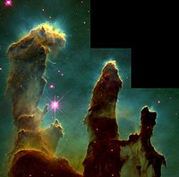

La formación estelar es el proceso por el cual grandes masas de gas (que se encuentran en galaxias formando extensas nubes moleculares en el medio interestelar), a veces denominadas como "guarderías estelares" o "regiones de formación estelar", colapsan para formar estrellas. Como rama de la astronomía, la formación estelar abarca el estudio del medio interestelar y de las nubes moleculares gigantes como precursores para el proceso de formación de las estrellas, el estudio de protoestrellas, objetos estelares jóvenes y así como sus productos inmediatos. Está estrechamente relacionada con la formación planetaria, otra rama de la astronomía. La teoría de la formación estelar, así como la contabilidad para la formación de una sola estrella, debe también tener en cuenta las estadísticas de las estrellas binarias y la función de la masa inicial.

En junio del 2005 los astrónomos aportaron evidencias para estrellas de la Población III en la galaxia Cosmos Redshift en z = 6.60. Es probable que tales estrellas hayan existido en el universo primigenio (es decir, con alto corrimiento hacia el rojo), y pueden haber comenzado la producción de elementos químicos más pesados que el hidrógeno que son necesarios para la posterior formación de planetas y vida tal como la conocemos.
La mayoría de las estrellas no se forman de forma aislada, sino que forman parte de un grupo de estrellas denominado cúmulo estelar o asociación estelar.